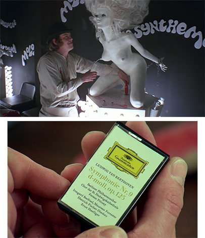

Screen-printed scarves
The design references 70s cult classic A Clockwork Orange by Stanley Kubrick.
Inspired by the Beethoven reference in the film, I opted for a design with neoclassical elements: simple and symmetrical.
Screen-printed on silk and cotton gauze.
